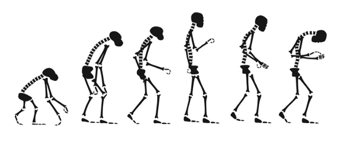
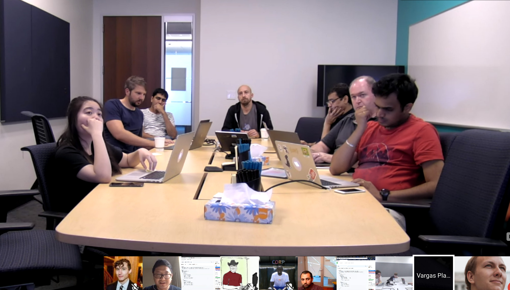
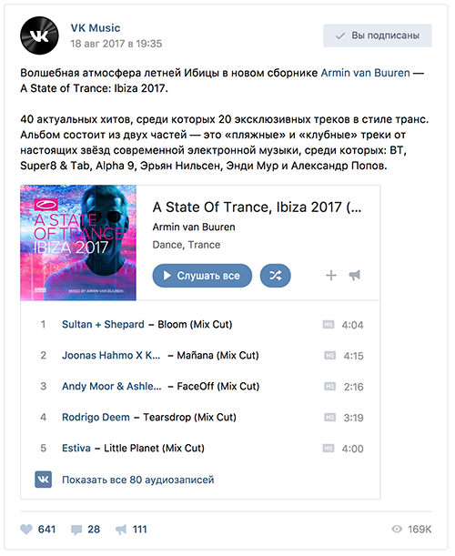
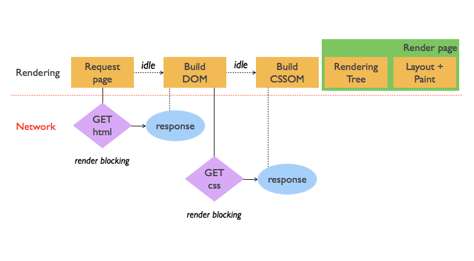

WTF is AMP и почему шмель летает?
Андрей Абрамов, Команда ВКонтакте
Web Standards Days, Ноябрь 2017
О чем поговорим
- Что не так с мобильным вебом?
- AMP — мгновенная отрисовка страниц
- Практикум. Делаем AMP-версию страницы
- Система AMP-компонентов
- Почему AMP такой быстрый?
- Что ждёт технологию?
Вопросы в зал
- У кого есть мобильная версия?
- Кто любит мобильный веб?
- Кто любит UX на мобильном?
Пользователи эволюционировали

Ну и мы не отстаем
- UX-рекомендации
- Mobile-first CSS, флексбокс
- Изображения для разных размеров экранов
- Тап вместо клика
- SVG
Мобильный веб не дотягивает по UX
- Среднее время загрузки ~ 17 секунд
- Bounce rate выше
- Количество посещенных страниц меньше
У нас
переходный
возраст!
А что делать нам? Адаптироваться!
AMP — Accelerated Mobile Pages (Ускоренные мобильные страницы)
- Кто слышал про AMP?
- Кто внедрял AMP?
Кому нужны быстрые сайты?
- Новостные платформы
- eCommerce
- Всем!
Код AMP страницы
<html amp lang="en">
...
<script async src="https://cdn.ampproject.org/v0.js">
...
<h1>Наш контент</h1>
<amp-img src="images/picture.jpg"
width="900" height="508" layout="responsive"></amp-img>
Инструменты для разработки
Опыт разработки расширения

Расширение AMP-VK
У ВКонтакте теперь есть embed-виджет
<amp-vk>, который позволяет встраивать
VK посты и виджеты опросов

Практикум. Давайте сделаем AMP страницу
- amp-form
- amp-carousel
- amp-iframe
- amp-sidebar
- amp-accordeon
Критический путь отрисовки

Почему у AMP-шмель летает?
- Кэширование
- Асинхронный JavaScript
- Inline CSS
- Ленивая инициализация компонентов
- Prerendering при поиске в Google
Не хочу AMP
Google AMP is Not a Good Thing
Kill Google AMP Before It Kills the Web
Отдай страницу меньше чем за 100 мс
Critical CSS / Inline CSS
Ленивая инициализация компонентов
JS async и т.д.
Что мы получили?
- «Починили» мобильный веб
- Временный костыль для переходного возраста
- Лучшие практики оптимизации